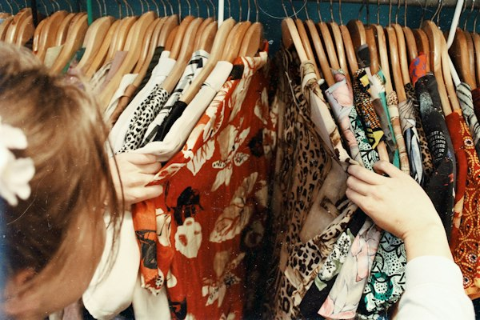
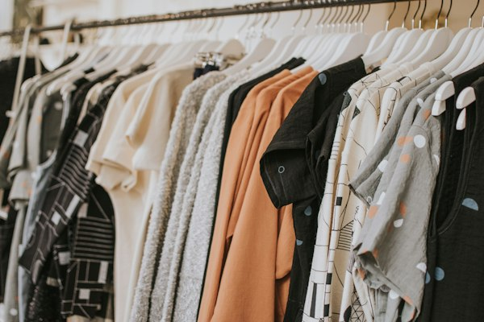
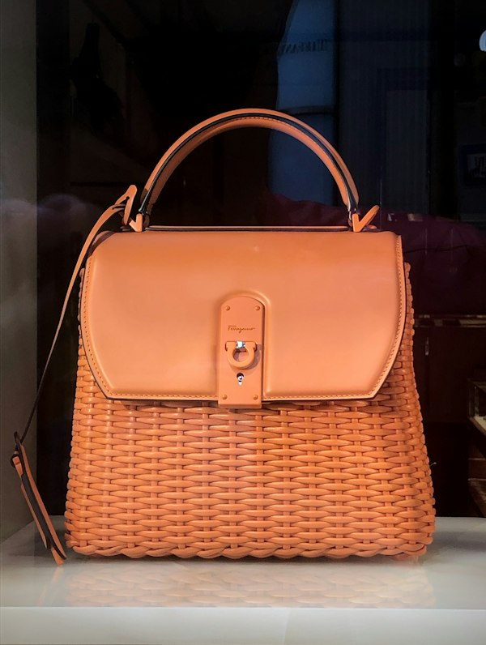

Искусство восстановления любимых вещей
Реставрация, ремонт и индивидуальный пошив изделий из кожи и меха в Волгограде. Сохраняем красоту, характер и долговечность ваших вещей.

Чем можем помочь?
Выберите тип изделия — откроем нужный раздел калькулятора с ориентировочной стоимостью.
До и после реставрации
Одна куртка или сумка — два состояния. Потяните разделитель и оцените разницу. Примеры созданы для демонстрации, а не сняты после реальных заказов.
Направления работы мастерской




Ориентировочная стоимость работ
Итоговая стоимость рассчитывается индивидуально после осмотра изделия мастером с учётом площади повреждений и необходимой технологии
Точная смета определяется мастером после диагностики или оценки по фотографии. Стоимость зависит от толщины кожи, площади повреждений и расхода оригинальной косметики Saphir. Консультация бесплатна.
Показать подробный прайс-лист
| Направление услуги | Что входит в базовую работу | Срок | Цена от | Действие |
|---|---|---|---|---|
| Реставрация кожаных курток | Устранение задиров, порезов, трещин воротника и манжет | 3–5 дней | 3 500 ₽ | Заказать |
| Покраска кожаной куртки | Глубокая очистка, подбор оттенка, покраска и защитный лак | 4–6 дней | 4 500 ₽ | Заказать |
| Реставрация и покраска сумок | Восстановление уголков, ручек, очистка, покраска тона | 2–4 дня | 2 800 ₽ | Заказать |
| Покраска и спа-уход для обуви | Выведение реагентов, покраска туфель/сапог, нано-пропитка | 2–3 дня | 2 200 ₽ | Заказать |
| Перекрой шубы / дубленки | Изменение фасона, укорачивание, коррекция проймы, посадка | 5–10 дней | 9 000 ₽ | Заказать |
| Индивидуальный пошив куртки | Снятие мерок, раскрой итальянской Nappa, примерки, сборка | 7–14 дней | 18 000 ₽ | Заказать |
| Ремонт автосидений / дивана | Локальное устранение прожогов, порезов, восстановление цвета | 1–3 дня | 5 000 ₽ | Заказать |
Требуется точный расчёт стоимости?
При необходимости отправьте фотографию напрямую мастеру в WhatsApp . На сайте фотографии не загружаются.
Почему доверяют GH-Leather
Реальные принципы работы нашего ателье в Волгограде
Индивидуальный подход к материалу
Учитываем тип дубления, толщину, структуру пор и возраст каждого изделия. Для замши, гладкой Nappa и меха применяются строго специализированные технологии.
Работа со сложными повреждениями
Беремся за случаи, от которых отказываются в обычных мастерских: сквозные порезы, задиры, застарелые пятна, химические ожоги и потертости с разрушением волокна.
Точный подбор оттенков и фактур
Колористический подбор красителя тон-в-тон при естественном и искусственном освещении. Восстанавливаем оригинальную матовость или полуглянец фабричного покрытия.
Профессиональная химия
Используем проверенные реставрационные составы Saphir Medaille D'or (Франция) и Fenice (Италия). Покрытие не линяет, не красит светлую одежду и устойчиво к влаге и морозу.
Опыт мастеров-ремесленников
Наши мастера специализируются на кожевенном и скорняжном деле, соблюдая традиционные технологии седельного шва и прецизионного перекроя.
Гарантия на выполненные работы
Фиксируем гарантийные обязательства на качество швов, прочность склейки и стойкость лакокрасочного покрытия.
Как проходит работа
4 простых шага — от консультации до готовой вещи
Отправка фотографии
Вы можете описать задачу мастеру по телефону или в WhatsApp.
Предварительная оценка
Мастер уточняет детали задачи, определяет характер повреждений и ориентир стоимости.
Согласование работ
При визите в ателье мастер осматривает вещь лично, после чего согласовываются перечень работ, точная смета и сроки.
Реставрация и выдача
Выполняются реставрационные работы строго по регламенту, после чего обновленное изделие возвращается клиенту.
Отзывы на независимых картах
Посмотрите отзывы о мастерской на независимых сервисах
Рейтинг организации подтверждён реальными клиентами, посещавшими мастерскую на ул. Ангарской, 114.
Открыть карточку в Яндекс КартахПодтверждённый профиль ателье с актуальным графиком работы, фотографиями входа и маршрутом.
Открыть карточку в 2ГИСКонтакты ателье GH-Leather
Наше ателье удобно расположено в Дзержинском районе Волгограда. Рядом находится остановка транспорта и парковка.
Дзержинский р-н, ул. Ангарская, дом 114
(Вход с торца здания магазина, рядом с поликлиникой №30)
+7 (8442) 50-32-99 (Городской номер)
+7 (927) 510-32-99 (МегаФон / WhatsApp)
Понедельник — Суббота: с 10:00 до 19:00
Воскресенье: по предварительной записи
Волгоград, Ангарская, 114
Дзержинский район. Выбирайте удобное приложение для построения маршрута.
Яндекс Карты Открыть 2ГИС Карты открываются только после вашего нажатия.